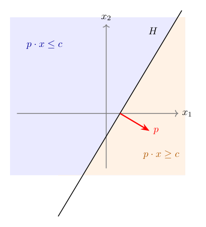
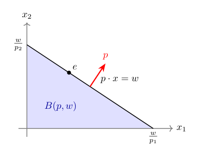
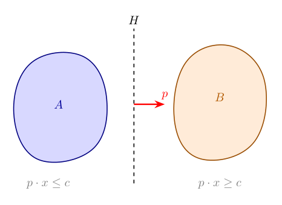
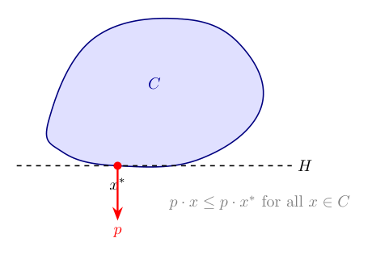
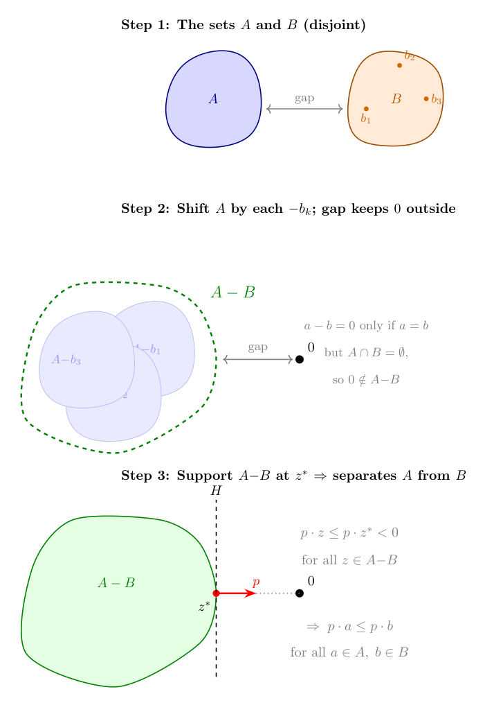

Topic 12: Linear Constraints and Incentives as Geometry
(Why prices are perpendicular and constraints have shape)
1. Why geometry enters now
Much of what we have done so far has been algebraic or analytic: writing down objective functions, taking derivatives, applying fixed-point theorems. But many of the most important ideas in microeconomics have a clean geometric interpretation that makes them easier to understand and harder to forget.
This topic develops the geometry of linear constraints. The central objects are hyperplanes and half-spaces — the building blocks of budget sets, feasibility constraints, and incentive conditions. The central results are the separating and supporting hyperplane theorems, which are the geometric engine behind the welfare theorems, the existence of prices, and the structure of mechanism design.
The connection to earlier material is direct: convexity (Topic 3) is what makes separation possible, and optimization (Topics 5–6) is what supporting hyperplanes formalize.
2. Hyperplanes and half-spaces
Hyperplanes and half-spaces are very simple and intuitive concepts. It turns out however that they are also very powerful. Notation wise they look much more scary than they actually are, the picture in 2-D essentially tells it all and the great thing about is, is that it generalizes to arbitrary dimensions (the machinery behind is the Hahn-Banach extension theorem—a theorem we won’t discuss here in detail).
Hyperplanes
A hyperplane in \(\mathbb{R}^n\) is a set of the form \[H = \{ x \in \mathbb{R}^n : p \cdot x = c \},\] where \(p \in \mathbb{R}^n\) is a nonzero vector and \(c \in \mathbb{R}\) is a scalar.
“A hyperplane is a flat surface of dimension \(n-1\) that divides the space into two sides.”
In \(\mathbb{R}^2\), a hyperplane is a line. In \(\mathbb{R}^3\), it is a plane. In general, it is the set of points whose inner product with a fixed direction \(p\) equals a constant, so in \(\mathbb{R}^2\) these are all points \((x,y)\) such that \(a x + b y =c\) for some given \(p=(a,b)\) and \(c\), e.g., if \(a=1,b=2,c=3\) we need to find \(x+2y=3 \Leftrightarrow x= 3-2y \Rightarrow\) a line.
An interesting property is that the vector \(p\) is the normal to the hyperplane: it is perpendicular to \(H\) and points in the direction of increasing \(p \cdot x\).
In our notation choice you see the tight connection to a budget set. If \(c\) is the budget, and \((x,y)\) is the bundle of goods, than \(p=(a,b)\) is the price vector. The hyperplane is then the set of points the consumer may buy if she usses all her budget. If there are more than 2 goods (like, e.g., in reality), your choice set has more dimensions, and so has the hyperplane. Because the hyperplane is a linear equation with \(n\) unknowns, we can solve for \(1\) of those unknowns, leading to a sphere in \(n-1\) dimensions. However, if we allow points to be negative,1 then there is a whole space of \(n-1\) dimensions floating around in the \(n\) dimensions.
Another way to think of this is to say. Let’s start with the an \(n\) dimensional space and consider all points \((x_i)_{i=1}^n\) such that \(x_n=0\). Here it is (I hope) clear to see that we get an \(n-1\) dimensional space because there are no restrictions on \((x_i)_{i=1}^{n}\). But then that space is the hypeplane that we get from selecting \(p=(0,0,...,1)\) and \(c=0\). Now, let’s imagine the \(x_n\) dimension is the one going straight up. Then changing \(c\neq 0\) while keeping \(p\) implies we shift our hyperplane up and down. Changing \(p\) on the other hand means we rotate it.2

Half-spaces
A hyperplane cuts \(\mathbb{R}^n\) into two half-spaces: \[H^- = \{ x : p \cdot x \leq c \} \quad \text{and} \quad H^+ = \{ x : p \cdot x \geq c \}.\]
“A half-space is everything on one side of a hyperplane, including the hyperplane itself.”
Again, think about the budget interpretation. The hyperplane (the budget line) divides the set of possibilities into those that you can afford given budget \(c\) (\(H^-\)) and those in which leaves you with no money leftover \((H^+)\).
Half-spaces are convex sets (Topic 3). This is immediate: if \(p \cdot x \leq c\) and \(p \cdot y \leq c\), then for any \(\lambda \in [0,1]\), \[p \cdot (\lambda x + (1-\lambda)y) = \lambda (p \cdot x) + (1-\lambda)(p \cdot y) \leq c.\]
Intersections of half-spaces are also convex (the intersection of convex sets is convex). This means that any set defined by a system of linear inequalities is convex. Such sets are called polyhedra, and they are everywhere in economics.
3. Budget sets as half-spaces
Let’s now discuss the budget set a bit more structured. The budget set is probably the most familiar linear constraint in economics is the budget set: \[B(p, w) = \{ x \in \mathbb{R}^n_+ : p \cdot x \leq w \}.\]
This is the intersection of a half-space (\(p \cdot x \leq w\)) with the nonnegative orthant (\(x \geq 0\)). The budget line is the hyperplane \(p \cdot x = w\) intersected with the half space defined by \(x \geq 0\); the boundary of the budget set.

The geometry makes several things visible that algebra obscures: - The price vector \(p\) is perpendicular to the budget line. Moving along the budget line (spending the same amount) means moving perpendicular to \(p\). Moving in the direction of \(p\) means spending more without change the relative proportions. - The slope of the budget line is \(-p_1/p_2\): the rate at which the market allows you to trade good 1 for good 2. - A change in prices rotates the budget line. A change in wealth shifts it.
This geometric perspective is not just a visualization aid. It is the basis for understanding why Walrasian equilibrium prices exist and why they have the structure they do.
4. The separating hyperplane theorem
The most important geometric result for economics is the separating hyperplane theorem. It says: two disjoint convex sets3 can always be separated by a hyperplane. This sounds trivial and to some extend it is. So don’t try to read more into it than there is. Often the difficulty is defining the hyperplanes.
Theorem (Separating Hyperplane). Let \(A, B \subseteq \mathbb{R}^n\) be nonempty, disjoint, convex sets. Then there exists a nonzero vector \(p \in \mathbb{R}^n\) and a scalar \(c \in \mathbb{R}\) such that \[p \cdot a \leq c \quad \text{for all } a \in A, \qquad p \cdot b \geq c \quad \text{for all } b \in B.\]
“If two convex sets don’t touch, there is a flat surface that passes between them, putting each set entirely on one side.”
A corollary to the separating hyperplane theorem is that we can always find a halfspaces \(H\) such that \(A\) is entirely in \(H\) and \(B\) is entirely in the complement to it \(H\).

The vector \(p\) defines the separating hyperplane \(\{x : p \cdot x = c\}\). The set \(A\) lies in the half-space \(p \cdot x \leq c\) and \(B\) lies in \(p \cdot x \geq c\).
We do not prove this result here. But the geometric content is intuitive: if two convex blobs don’t overlap, you can always slide a flat surface between them. If one wants to prove separating hyperplanes there are two roads. One is to restrict oneself to finite dimensions as we do up here. In that case the separating hyperplanes can be proven using the supporting hyperplane theorem below—we will come back to that road.
Alternatively, if one wants to go for infinite dimension, one would need to restrict to compact sets, too. Otherwise, the theorem does not hold. Then there is proof that uses the Hahn-Banach theorem. We will not push in that dimension further here.
Why separation matters for economics
The separating hyperplane theorem is the mathematical engine behind:
The Second Welfare Theorem. Any Pareto efficient allocation can be supported as a competitive equilibrium with appropriate transfers. The proof works by separating the “better-than” set of one consumer from the aggregate production set. The separating hyperplane gives us the prices.
The existence of supporting prices. When we say “an efficient allocation can be decentralized by prices,” we are saying: there exists a hyperplane (defined by prices) that separates the sets of preferred allocations from what is feasible. The prices are literally the normal vector of the separating hyperplane.
Duality in optimization. The connection between primal and dual problems in constrained optimization is fundamentally about separating hyperplanes. The dual variables (Lagrange multipliers, shadow prices) are the normals of hyperplanes that separate the feasible set from the “better” set.
5. The supporting hyperplane theorem
A closely related result is the supporting hyperplane theorem. Instead of separating two disjoint sets, it finds a hyperplane that “touches” a convex set at a boundary point without cutting into it.
Theorem (Supporting Hyperplane). Let \(C \subseteq \mathbb{R}^n\) be a nonempty, convex set, and let \(x^\ast\) be a point on the boundary of \(C\). Then there exists a nonzero vector \(p\neq 0\) such that \[p \cdot x \leq p \cdot x^\ast \quad \text{for all } x \in C.\]
“At any boundary point of a convex set, there is a flat surface that touches the set without entering its interior. The entire set lies on one side.”

The supporting hyperplane \(\{x : p \cdot x = p \cdot x^\ast\}\) is tangent to \(C\) at \(x^\ast\). The normal vector \(p\) points “outward” — away from the interior of \(C\).
The proof uses one geometric fact that is both intuitive and powerful: if you stand outside a closed convex set, there is a unique closest point in the set, and the line connecting you to that closest point defines a separating direction.
Proving supporting hyperplanes and with it separating ones
We prove things here for a closed convex set. It doesn’t matter though really, because the closure of \(C\) is also convex and the smallest closed set containing \(C\). So if the result holds for a closed \(C\), it holds for any convex set whose closure is \(C\).
Step 0: The closest-point property. Let \(C\) be a closed convex set and \(y \notin C\). Then there exists a unique point \(z \in C\) that is closest to \(y\).4
Now set \(p = y - z\). We claim that \(p \cdot x \leq p \cdot z\) for all \(x \in C\). In words: the hyperplane through \(z\) with normal \(p\) puts all of \(C\) on one side and \(y\) on the other.
Why? Suppose some \(x \in C\) had \(p \cdot x > p \cdot z\). Then look at the point \(z_t = z + t(x - z)\) for small \(t > 0\). By convexity of \(C\), \(z_t \in C\). A direct calculation gives \[\|y - z_t\|^2 = \|y - z\|^2 - 2t\, p \cdot (x - z) + t^2 \|x - z\|^2.\] The second term is \(-2t(p \cdot x - p \cdot z) < 0\) for small enough \(t\) (because we assumed \(p \cdot x > p \cdot z\)), and the third term is bounded by \(t^2\), or \(O(t^2)\), so for small \(t\) the whole expression is less than \(\|y - z\|^2\). But that means \(z_t\) is closer to \(y\) than \(z\) is, contradicting the fact that \(z\) is the closest point. So \(p \cdot x \leq p \cdot z\) for all \(x \in C\).
Here is the geometric intuition for step 0:
“Drop a perpendicular from \(y\) to the convex set. The foot of the perpendicular is the closest point, and the hyperplane at the foot separates \(y\) from \(C\).”
Step 1: From separation to support. Now we use the closest-point property to prove the supporting hyperplane theorem. Take \(x^\ast\) on the boundary of \(C\). Because \(x^\ast\) is a boundary point, there exist points outside \(C\) that are arbitrarily close to it. Of those we now take a sequence \(y_k \notin C\) with \(y_k \to x^\ast\).
For each \(y_k\), let \(z_k = \text{proj}_C(y_k)\) be the closest point in \(C\), and define the unit normal \[p_k = \frac{y_k - z_k}{\|y_k - z_k\|}.\]
By Step 0, we know that \(p_k \cdot x \leq p_k \cdot z_k\) for all \(x \in C\).
Step 2: Extract a limit. By construction, each \(p_k\) is a unit vector (it lives on the unit sphere in \(\mathbb{R}^n\)). In finite dimensions, the unit sphere is compact (Topic 4), so the sequence \((p_k)\) has a convergent subsequence with limit \(p\) satisfying \(\|p\| = 1\) (in particular, therefore, \(p \neq 0\)).
Along this subsequence, \(z_k \to x^\ast\) (because \(z_k\) is between \(y_k\) and \(C\), and \(y_k \to x^\ast\), which lies on the boundary of \(C\), the closest points must approach \(x^\ast\) as well).
Taking the limit in the inequality \(p_k \cdot x \leq p_k \cdot z_k\) gives \[p \cdot x \leq p \cdot x^\ast \quad \text{for all } x \in C.\]
That is the supporting hyperplane.
“Approach the boundary from outside, project onto the set at each step, and take a limit. The limit of the projection directions is the normal to the supporting hyperplane.”
Every ingredient in this proof comes from the course: convexity gives us the closest point and keeps the set well-behaved (Topic 3), compactness of the unit sphere gives us the convergent subsequence (Topic 4), and the limit argument uses continuity of the inner product.
From supporting to separating
The separating hyperplane theorem then follows from the supporting one. The construction is worth seeing because it is a beautiful example of reducing one problem to another.
If \(A\) and \(B\) are disjoint convex sets, form the so-called Minkowski difference \[A - B = \{a - b : a \in A,\; b \in B\}.\]
This set is convex (the “sum” of two convex sets is convex, and \(A - B = A + (-B)\)). Because \(A\) and \(B\) are disjoint, \(0 \notin A - B\) (if \(0 = a - b\) for some \(a \in A, b \in B\), then \(a = b \in A \cap B\), contradicting disjointness).
So \(0\) is a point outside the convex set \(\overline{A - B}\). Find the closest point \(z^\ast \in \overline{A - B}\) to the origin, and set \(p = -z^\ast\) (the direction from \(z^\ast\) toward the origin). By the closest-point property (Step 0), \(p \cdot z \leq p \cdot z^\ast\) for all \(z \in \overline{A - B}\). Moreover, \(p \cdot z^\ast = -\|z^\ast\|^2 < 0 = p \cdot 0\), so the origin is strictly on the other side.
In particular, for every \(a \in A\) and \(b \in B\), the element \(a - b \in A - B\) satisfies \(p \cdot (a-b) \leq p \cdot z^\ast < 0\), which gives \[p \cdot a < p \cdot b \quad \text{for all } a \in A,\; b \in B.\]
Setting \(c = \sup_{a \in A} p \cdot a\), the hyperplane \(\{x : p \cdot x = c\}\) separates \(A\) from \(B\).

“To separate two convex sets: subtract one from the other, support the difference at the origin, read off the separating direction. Then shift it toward the set you want to separate from.”
Why support matters for economics
Supporting hyperplanes formalize what happens at an optimum. If an agent maximizes a linear objective over a convex constraint set, the optimal point is on the boundary, and the objective’s gradient defines a supporting hyperplane there.
This is the geometric content of the first-order conditions. When we write \(\nabla u(x^\ast) = \lambda p\) at a consumer’s optimum, we are saying: the indifference surface through \(x^\ast\) is tangent to the budget hyperplane. The price vector \(p\) is the normal of the supporting hyperplane, and \(\lambda\) is a scaling factor.
In welfare economics, the supporting hyperplane theorem is used in the First Welfare Theorem direction: at a Walrasian equilibrium, the price hyperplane supports each consumer’s “at least as good” set at their chosen bundle.
6. Incentive constraints as geometry
The geometric perspective extends naturally to mechanism design, where constraints are often linear in transfers and allocations.
Consider a simple mechanism design problem: a principal offers a menu of contracts \((q, t)\) — a quality level \(q\) and a transfer \(t\) — to an agent whose type \(\theta\) is private information. The agent’s utility from a contract is \[u(\theta) = \theta q - t.\]
Incentive compatibility as half-spaces
The incentive compatibility (IC) constraint says: each type must prefer her own contract to any other type’s contract. If there are two types \(\theta_H > \theta_L\) with contracts \((q_H, t_H)\) and \((q_L, t_L)\), the IC constraints are: \[\theta_H q_H - t_H \geq \theta_H q_L - t_L \quad \text{(high type doesn't mimic low type)},\] \[\theta_L q_L - t_L \geq \theta_L q_H - t_H \quad \text{(low type doesn't mimic high type)}.\]
Each of these is a linear inequality in the contract variables \((q_H, t_H, q_L, t_L)\). Each defines a half-space. The set of incentive-compatible contracts is the intersection of these half-spaces — a polyhedron.
Individual rationality as half-spaces
The individual rationality (IR) constraint says: each type must get at least her outside option. If the outside option is zero: \[\theta_H q_H - t_H \geq 0, \qquad \theta_L q_L - t_L \geq 0.\]
Again, linear inequalities. Again, half-spaces.
The geometry of mechanism design
The full set of feasible mechanisms is the intersection of all IC and IR constraints — a polyhedron in the space of contracts. The principal’s problem is to maximize revenue (or another linear objective) over this polyhedron.
This is a linear programming problem, and its geometry is clean: - the feasible set is a polyhedron, - the optimum is at a vertex (or a face) of this polyhedron, - the binding constraints at the optimum tell us which incentive and participation conditions are “tight.”
The result that “in the optimal mechanism, the low type’s IR binds and the high type’s downward IC binds” is a statement about which faces of the polyhedron the optimum lies on. The geometric perspective makes this visible rather than mysterious.
7. An economic example: the Second Welfare Theorem
Consider a two-consumer exchange economy. Consumer 1 has preferences over bundles \(x_1 \in \mathbb{R}^2_+\) and consumer 2 over \(x_2 \in \mathbb{R}^2_+\), with total endowment \(\bar{\omega}\).
Let \((\hat{x}_1, \hat{x}_2)\) be a Pareto efficient allocation. Define: - \(A =\) the set of bundles that consumer 1 strictly prefers to \(\hat{x}_1\), - \(B =\) the set of aggregate bundles that are feasible: \(\{y : \bar{\omega} - y\) is in consumer 2’s “at least as good as \(\hat{x}_2\)” set\(\}\).
Because preferences are convex, both \(A\) and \(B\) are convex.5 Because \((\hat{x}_1, \hat{x}_2)\) is Pareto efficient, \(A\) and \(B\) are disjoint (there is no bundle that is strictly better for 1 and still feasible for 2).
By the separating hyperplane theorem, there exists a price vector \(p\) that separates \(A\) from \(B\). This \(p\) is the vector of Walrasian equilibrium prices.
“The Second Welfare Theorem says: efficient allocations can be decentralized by prices. The proof is: use the separating hyperplane theorem. The prices are the normal vector of the separating hyperplane.”
This is perhaps the cleanest example of how geometry does real economic work.
8. Where this appears in Mas-Colell, Whinston, and Green (MWG)
- MWG, Chapter 3 (budget sets and consumer choice — budget sets as half-spaces),
- MWG, Chapter 16 (the Second Welfare Theorem — separating hyperplane argument),
- MWG, Mathematical Appendix A (convexity, separation theorems).
The geometric approach to mechanism design is not developed extensively in MWG but is standard in the mechanism design literature.
9. Why this matters for microeconomics
Linear constraints and separation theorems are the geometric foundation of: - consumer theory (budget sets, demand, Slutsky), - welfare economics (the First and Second Welfare Theorems), - general equilibrium (existence of prices, Walrasian equilibrium), - mechanism design (incentive and participation constraints as polyhedra), - duality (shadow prices, Lagrange multipliers as supporting hyperplane normals).
The key insight running through all of this is: convexity makes separation possible, and separation gives us prices. This is why convexity assumptions (Topic 3) are not just technical convenience — they are what allows the price system to work.
10. What you should take away
After this topic, you should be comfortable with: - reading hyperplanes, half-spaces, and polyhedra as geometric objects, - seeing budget sets as half-spaces with the price vector as the normal, - understanding the separating and supporting hyperplane theorems and their economic content, - recognizing that incentive and participation constraints in mechanism design define polyhedra, - and seeing prices as normal vectors of separating or supporting hyperplanes.
The geometry in this topic is not decoration. It is the language in which the deepest results of welfare economics and mechanism design are stated and proved.
For example because you could sell them on the market at market price, or, as in financial markets go short on an assest without even owning it.↩︎
One should note that \(p\) is not unique for a given direction (a fact you may remember from highschool algebra), we can scale it, by any scalar \(m\neq 0\) without changing the direction.↩︎
Sets are disjoint if their intersection is empty.↩︎
Existence follows from closedness and boundedness of the relevant sublevel set (the same logic as the Weierstrass theorem in Topic 4). Uniqueness follows from strict convexity of the distance function: if two points \(z_1, z_2 \in C\) were both closest, the midpoint \((z_1+z_2)/2 \in C\) (by convexity) would be strictly closer — a contradiction.↩︎
Convexity of preferences ensures that the upper contour sets — the “at least as good as” sets — are convex. This is where the convexity assumptions from Topic 3 earn their place.↩︎